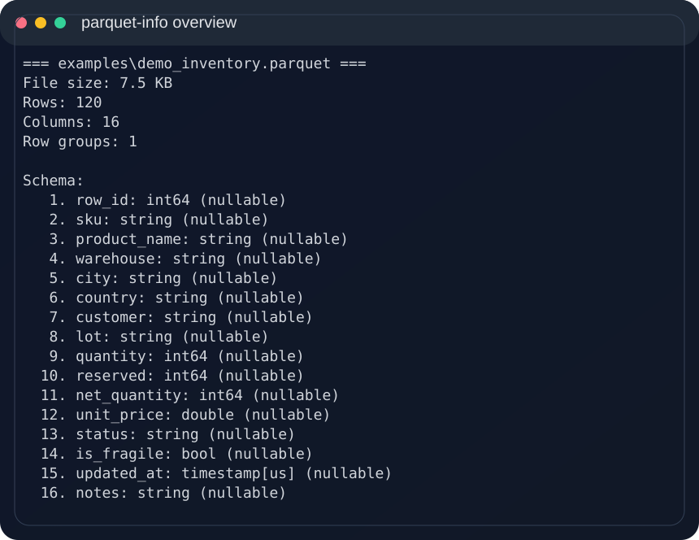
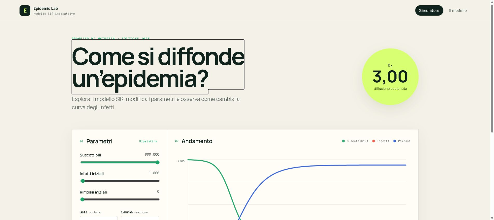
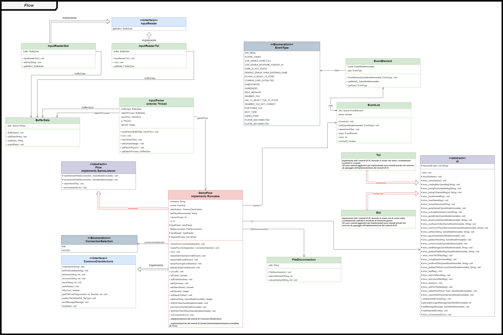

I
Data & decisions
Business Intelligence, KPI frameworks, Power BI, data governance and reporting systems built around real operational needs.
Mathematical engineering · Data · Software
I turn complex data and operational questions into clear systems, useful software and measurable decisions.
Business Intelligence, Data Analytics & Software Development Specialist at The First. MSc in Mathematical Engineering at Politecnico di Milano.
Abstract
I work at the intersection of business intelligence, data governance and software development. My background in computer and mathematical engineering helps me move from a loosely defined problem to a structure that people can understand, maintain and use.
Teaching remains part of that practice: explaining mathematics clearly is another way of designing reliable systems of thought.
Current practice
I
Business Intelligence, KPI frameworks, Power BI, data governance and reporting systems built around real operational needs.
II
Python, PostgreSQL, TypeScript and modern web technologies used to make processes clearer, faster and less fragile.
III
Mathematics teaching and lesson design, with an archive of notes and exercises kept available for students and colleagues.
Selected work

Data tooling · Python
A focused CLI that turns an unfamiliar Parquet file into an inspectable, searchable dataset.
Read case study
Modelling · Blazor
An interactive SIR simulator that makes differential equations tangible in the browser.
Read case study
Distributed systems · Java
A multiplayer board game engineered by a four-person team across networks, interfaces and recovery.
Read case studySelected trajectory
—present
Business Intelligence, Data Analytics & Software Development Specialist
Company-wide reporting, data integration and automation, from legacy AS400 sources to executive Power BI dashboards.
—2026
MSc in Mathematical Engineering
Advanced quantitative study following a BSc in Computer Engineering.
—2025
Mathematics teacher
High-school mathematics teaching, tailored lesson planning and technology-supported instruction.